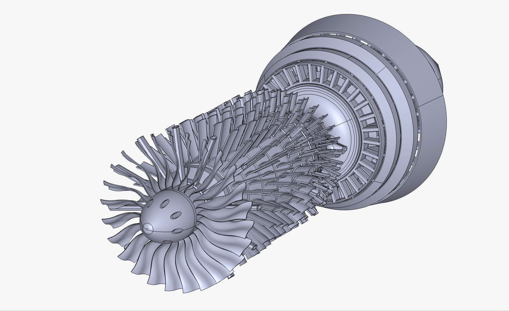

AREE DI RICERCA & COMPETENZA
Divisioni Operative

MECCANICA & MATERIALI
Strutture & Calcolo FEM
Modellazione CAD parametrica, calcolo strutturale sotto carichi flessionali estremi e ricerca sperimentale su materiali compositi resilienti ad alte temperature.

FLUIDODINAMICA
Aerodinamica & Integrazione Termica
Simulazioni CFD transoniche e supersoniche, studio dei profili alari portanti, design di prese d'aria, serbatoi e ugelli propulsivi integrati.

ELETTRONICA DI BORDO
Hardware & Sensoristica
Progettazione di PCB custom, cablaggi schermati per alta velocità, telemetria in tempo reale, alimentazione e acquisizione dati da sensori inerziali.

ALGORITMI & CONTROLLO
Software, Controlli & AI
Sviluppo di firmware real-time, algoritmi di stabilità e controllo (GNC), elaborazione dati di volo e future architetture di volo autonomo basate su intelligenza artificiale.